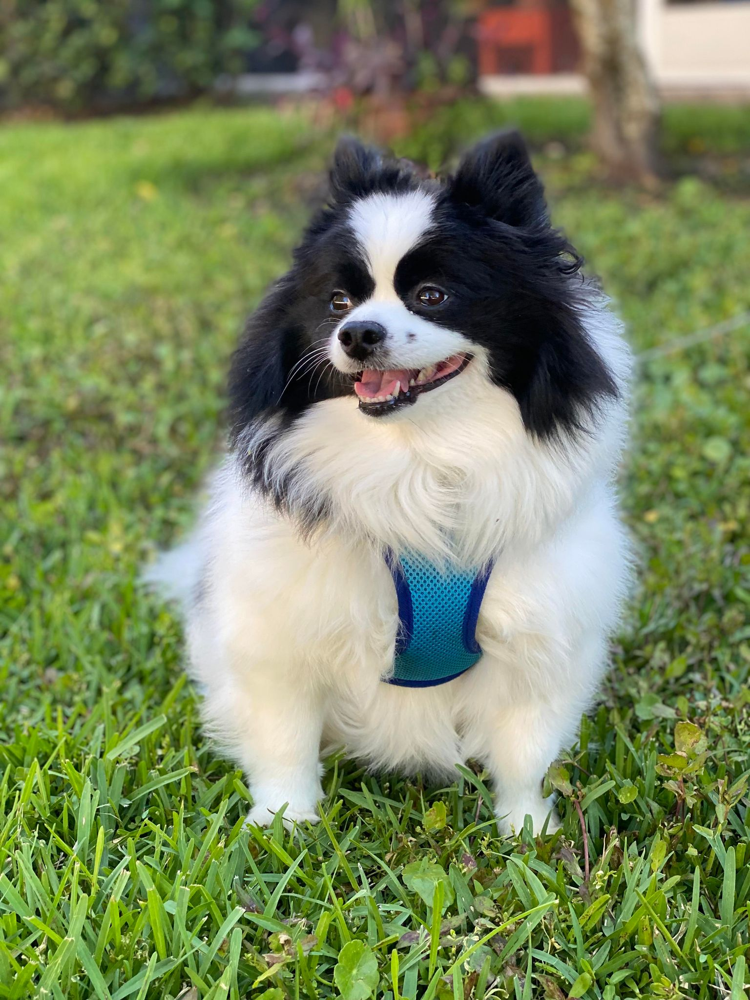
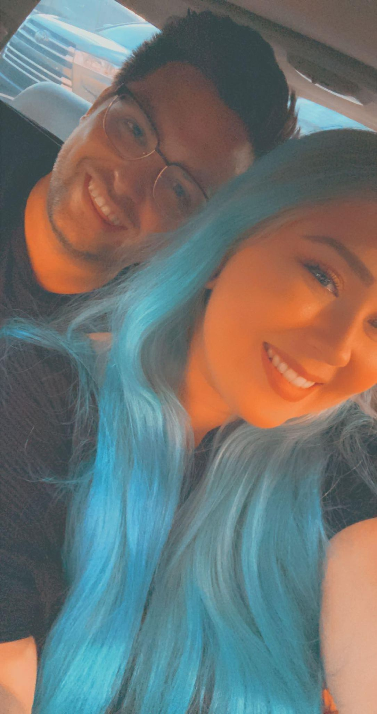
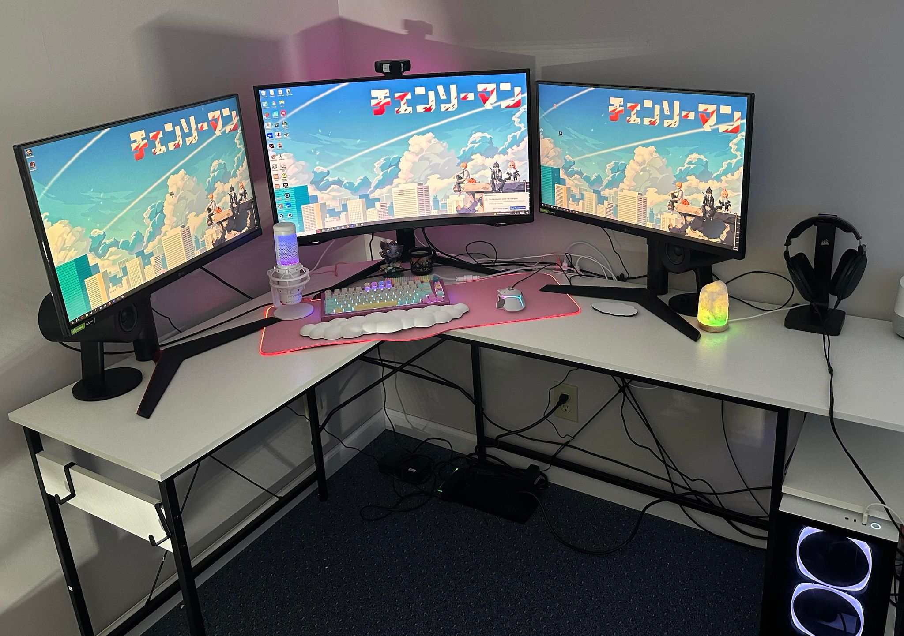
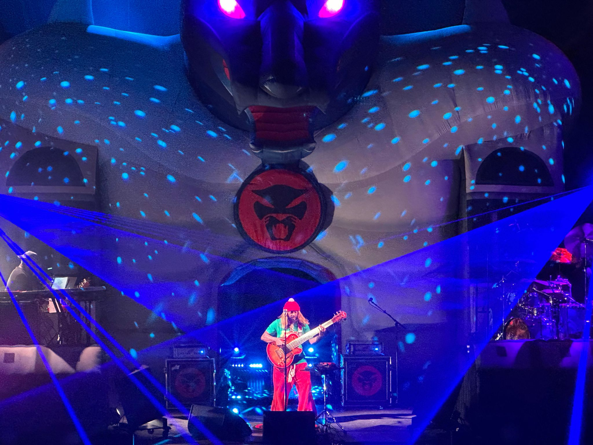
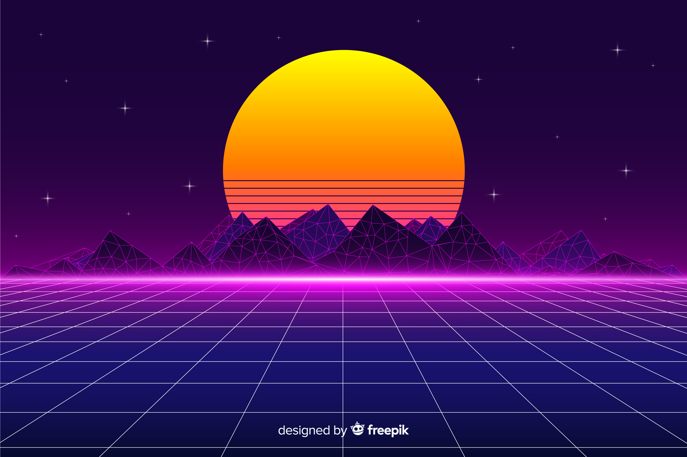

Photos of my life!
My fluffy Pomeranian Lyla!
My partner Nick (left) and I (right).
My gaming setup and also where I spend most of my time.
My other favorite thing to do is go to concerts. This was a Thundercat (one of my favorite artist's) show I went to in Altanta, Georgia last year.
About Me!
I am Haley, a 26-year-old interactive design enthusiast originally from Spring Hill, Florida, but I grew up soaking in the vibrant atmosphere of Sarasota. Currently, I'm pursuing my studies in Interactive Design, although I'm contemplating focusing more on web design as I explore my academic journey.
I'm a proud nerd at heart, finding immense joy in indulging my love for anime and gaming. While I tend to gravitate towards indoor activities due to my introverted nature, I also love stepping out to try new foods and experience the energy of live concerts.
Creativity is my lifeblood, and I express it through various mediums, from photography to painting. My adorable Pomeranian, Lyla, and my partner, Nick, are my constants in life, bringing endless joy and love.
Design wise, I am deeply enamored with the retro aesthetic of the '80s, particularly the mesmerizing world of vaporwave. Vaporwave is more than just a style; it's a nostalgic journey back in time, blending elements of '80s and '90s culture with a modern twist. Picture neon lights, pastel colors, and glitchy visuals set against a backdrop of lo-fi music (see photo below). For me, vaporwave represents a fusion of nostalgia and innovation, capturing the essence of a bygone era while infusing it with contemporary creativity. It's a surreal experience that transports me to a dreamy, futuristic landscape, where I can lose myself in its hypnotic allure. In my designs, I utilize a lot of these vaporwave inspired elements, most often in my color palettes and visuals.
My dreams are as vast as my imagination! I hope to travel to Japan one day and immerse myself in its culture. Ultimately, I aspire to build a career that allows me to unleash my creativity and make a meaningful impact on the world. Come along on my journey as I explore the endless possibilities of design and craft digital wonders!
My Design Style!
Vaporwave styled digital art.
Image by pikisuperstar on Freepik
Example Websites of my Design Style!
1.www.vapor95.com- The website for a super cool vaporwave inspired clothing brand. I really enjoy the overall design of their website.
2.Warakami-Vaporwave- This is a Tumblr page styled in the aesthetic I enjoy and also showcases vaporwave inspired art.